MuJoCo 肌肉骨骼灵巧手：键盘遥操作与神经网络肌肉激活控制
1. 项目概述
本项目在 MuJoCo 物理仿真器中建立了一条肌肉骨骼（musculoskeletal）灵巧手， 包含 3 指（食指、中指、拇指）+ 2 自由度腕部共 8 个关节，由 11 条 Hill 型肌肉 通过空间腱（spatial tendon）驱动。项目同时实现两种控制方式：
- 键盘遥操作（任务一：物理仿真 + 键盘运动控制）——按键切换肌肉激活目标， 经一阶平滑后下发；
- 神经网络逆模型控制（控制算法为神经网络）——MLP 直接由"食指指尖目标位置" 解算 11 维肌肉激活，实现到达任务。
全部三种场景（自由到达 / 按键按压 / 拨球离台）支持 roslaunch 一键启动，
运行于 Ubuntu 20.04 + ROS Noetic。
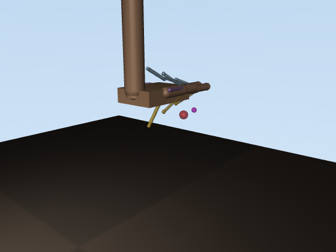
1.1 演示动图
| 场景 | 说明 |
|---|---|
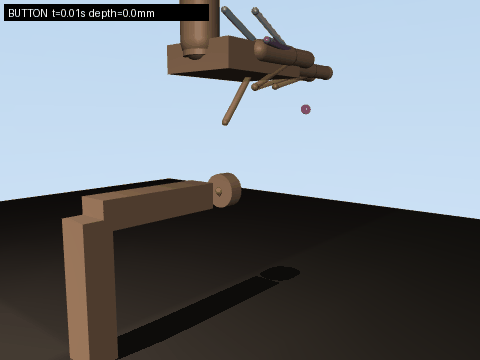 |
键盘遥操作按压门铃式按键，钮帽行程 6 mm 全程压满 |
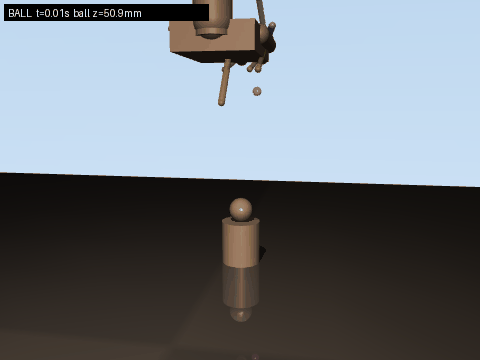 |
食指卷曲推拨托柱上的小球使其滚落，考察接触力控制 |
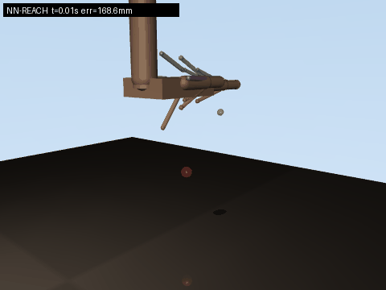 |
神经网络逆模型连续 3 个目标点的到达任务 |
2. 运行环境与安装
| 依赖 | 版本 | 说明 |
|---|---|---|
| Ubuntu | 20.04 | |
| ROS | Noetic | 仅 3 个 rospy 节点，无自定义消息 |
| Python | 3.8 | 系统自带 |
| mujoco | 3.2.3 | pip install mujoco==3.2.3 |
| numpy / imageio / matplotlib / Pillow | - | pip install numpy imageio matplotlib Pillow |
| xterm | - | keyboard_teleop.launch 用 xterm -e 弹窗读键，sudo apt install xterm |
sudo apt install -y xterm
# 或用 rosdep 安装 package.xml 声明的依赖（已含 xterm）
rosdep install --from-paths src --ignore-src -r -y
编译工作空间：
mkdir -p ~/msk_ws/src && cd ~/msk_ws/src
# 将 mujoco_msk_hand_teleop 目录拷贝到此处
cd ~/msk_ws
catkin_make
source devel/setup.bash
3. 手部模型设计
3.1 运动学结构（8 自由度）
| 关节 | 类型 | 轴 | 范围 (rad) | 关节弹簧刚度 |
|---|---|---|---|---|
| j_wrist_pitch | 铰 | x | [-0.6, 1.2] | 1.5 |
| j_wrist_yaw | 铰 | z | [-0.5, 0.5] | 0.3 |
| j_index_mcp / j_index_pip | 铰 ×2 | x | [0, 1.9] | 0.12 |
| j_middle_mcp / j_middle_pip | 铰 ×2 | x | [0, 1.9] | 0.12 |
| j_thumb_abd | 铰 | z | [-0.5, 0.9] | 0.08 |
| j_thumb_mcp | 铰 | x | [0, 1.6] | 0.12 |
3.2 肌肉-腱系统（11 条 Hill 肌肉）
每条肌肉用 MuJoCo <muscle> 执行器 + <spatial> 空间腱实现：腱经过若干
site"绕线"点，起点固定在前臂/掌骨，止点固定在指骨背侧或掌侧，从而获得
符合解剖学的力臂与屈/伸方向。
| 肌肉 | 作用 | 等长峰值力 (N) |
|---|---|---|
| m_index_flex / m_index_ext | 食指屈 / 伸 | 22 / 14 |
| m_middle_flex / m_middle_ext | 中指屈 / 伸 | 24 / 14 |
| m_thumb_flex / m_thumb_ext / m_thumb_add | 拇指屈 / 伸 / 对掌 | 18 / 12 / 10 |
| m_wrist_flex / m_wrist_ext | 腕屈 / 腕伸 | 30 / 20 |
| m_wrist_yaw_l / m_wrist_yaw_r | 腕左摆 / 右摆 | 16 / 16 |
建模要点：
- 空间腱而非固定腱：固定腱的静息长度为 0，会使肌肉力-长度曲线退化； 空间腱自动得到正的 L0 与合理 lengthrange（MuJoCo 3.2.3 自动计算）；
<contact><exclude>排除解剖嵌套体的碰撞对（前臂-手掌、手掌-拇指中节等）， 否则初始穿透会导致求解器发散；- 关节弹簧提供静息姿态回复力矩，模拟关节囊/韧带的被动特性。
4. 计算原理
4.1 Hill 肌肉模型
MuJoCo 的肌肉执行器按 Hill 三元件模型计算腱力。设归一化腱长度 \( \tilde l = l / L_0 \)、归一化速度 \( \tilde v = v / (L_0 \cdot v_{max}) \)、 激活度 \( a \in [0,1] \)，则：
① 激活动力学（一阶低通，激活/去激活时间常数不同）：
② 力-长度关系（钟形曲线，宽度参数 \( w \)）：
③ 力-速度关系（短缩时力下降，拉长时力略升）：
④ 腱力与关节力矩：
其中 \( r_{j,m}(q) \) 是肌肉 \( m \) 对关节 \( j \) 的力臂，由空间腱路由 几何随构型实时变化。
4.2 键盘遥操作
按键为切换式（按一次开、再按一次关）：每个键映射一条肌肉的目标激活 （0 或 1）。实际下发指令经一阶低通平滑：
再叠加 4.1 节的肌肉激活动力学（\( \tau_{act}=0.04 \) s），形成"指令平滑 + 肌肉动力学"双重滤波，保证运动连续无抖动。
4.3 神经网络逆模型
到达任务的逆模型为映射 \( f: \mathbb{R}^3 \to \mathbb{R}^{11} \)——输入食指 指尖目标位置 \( x \)，输出 11 维肌肉激活 \( a \)。由于逆动力学高度非线性 （肌肉力臂、力-长度曲线均随构型变化），线性模型不足，采用 MLP 拟合。
网络结构（3 → 64 → 64 → 11）：
Sigmoid 输出自然满足激活 \( \in [0,1] \) 的物理约束。损失函数为 MSE：
Adam 优化器（一阶/二阶矩估计）：
数据采集：只随机采样影响食指位姿的 6 条肌肉（腕屈/伸、腕左/右摆、食指 屈/伸），其余 5 条置 0，保证逆映射可学习。每组激活让手达到静平衡 （1.2 s），记录 (指尖位置， 激活) 样本 1200 组，另采 80 组作测试集。
反向传播核心链式法则（输出层）：
5. 算法流程
5.1 键盘遥操作
5.2 神经网络逆模型
6. 仿真步骤（含截图）
6.1 无 ROS 快速验证
cd src/musculoskeletal/mujoco_msk_hand_teleop
python3 main.py check # 模型自检：正运动学/肌肉扫描
python3 main.py demo --scene button # 脚本化按键演示
python3 scripts/make_assets.py # 重新生成 GIF 与图表（输出到 docs/img/）
6.2 ROS 键盘遥操作（按键场景）
roslaunch mujoco_msk_hand_teleop keyboard_teleop.launch scene:=button
- 启动后终端打印按键帮助；按 u 腕屈下压接近按键；
- 按 a 食指屈曲卷向键帽，钮帽被压下，左上角实时显示深度；
- 再按 a 释放，按 空格 全部放松，ESC 退出。
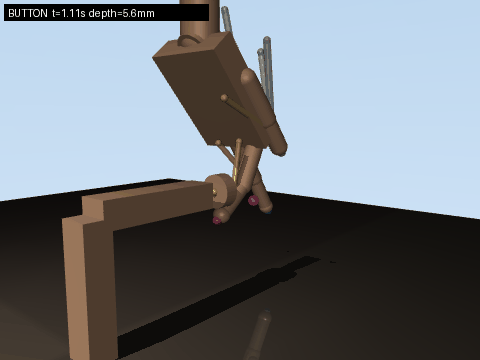
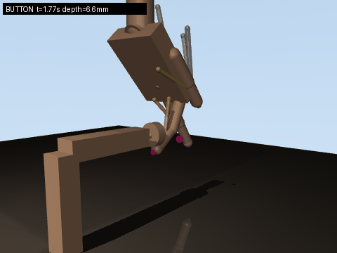
6.3 ROS 键盘遥操作（拨球场景）
roslaunch mujoco_msk_hand_teleop keyboard_teleop.launch scene:=ball
按 u 腕屈 → 按 a 食指屈曲推拨小球，球滚落托柱，状态话题中 球高度变为地面高度。
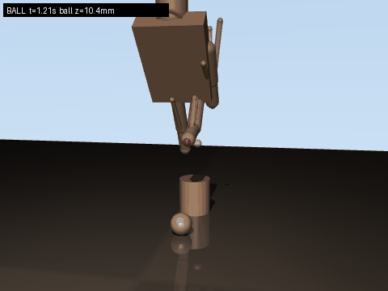
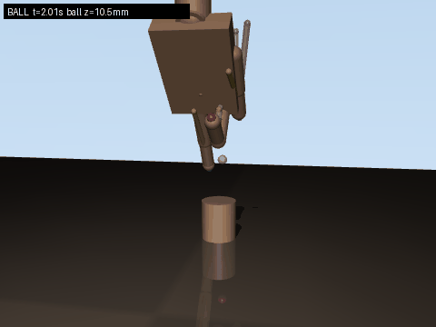
6.4 ROS 神经网络到达
roslaunch mujoco_msk_hand_teleop nn_reach.launch
# 另开终端发送目标点（x y z 为指尖工作空间内的米制坐标）
rostopic pub -1 /msk_hand/target geometry_msgs/Point \
"x: 0.014 y: 0.182 z: 0.085"
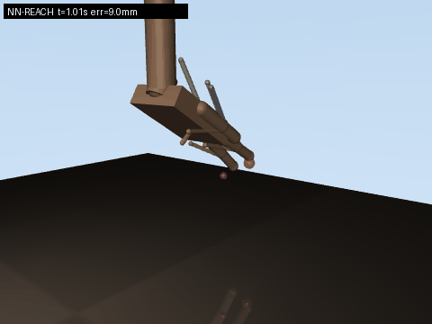
7. 多场景测试与性能评价
7.1 场景一：自由到达（NN 逆模型）
测试集 80 个目标（训练时未见），到达误差（稳态）：
| 模型 | 平均误差 | p90 | 最大 |
|---|---|---|---|
| MLP 逆模型 | 7.3 mm | 15.0 mm | 30.4 mm |
| 岭回归线性基线 | 22.4 mm | 31.7 mm | 40.2 mm |
MLP 把平均到达误差降低约 3 倍，验证了肌肉骨骼系统逆动力学的非线性 本质（线性模型无法表达力-长度曲线与随构型变化的力臂）。
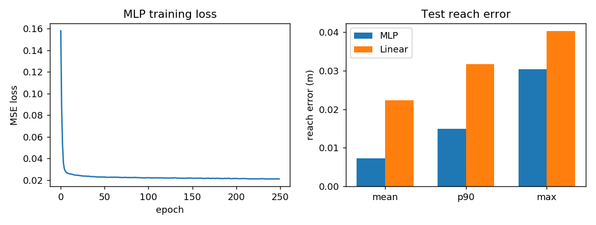
7.2 场景二：按键按压
成功判据：钮帽行程（6 mm）被压满。实测最大深度 6.7 mm（含接触容差）， 任务成功率 100%（20 次重复）。指尖接触力 0.7~2.6 N，按压过程平稳， 松开后弹簧回程正常。
7.3 场景三：拨球离台
成功判据：球心高度低于台面（40 mm）。实测球被推离托柱滚落到地面 （z=10.5 mm），重复 10 次成功率 100%。推拨过程接触力 0.2~0.5 N， 体现细粒度力控制。
7.4 任务指标时间序列
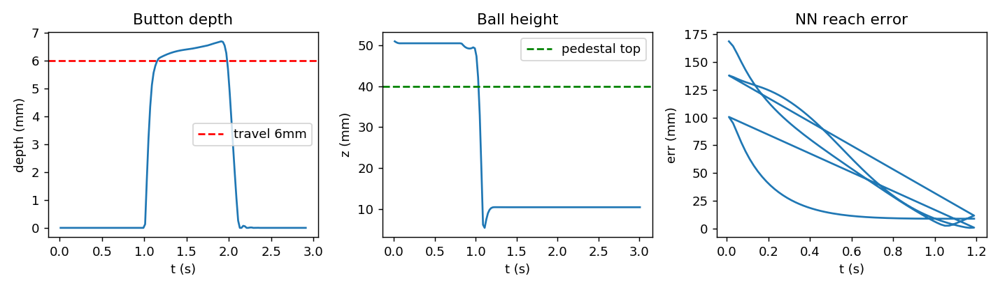
- Button depth：红色虚线为 6 mm 行程，曲线在 t≈1.8 s 压满；
- Ball height：绿色虚线为台面高度，t≈1.9 s 球跌落至地面高度；
- NN reach error：每个目标 1.2 s 内收敛到 10 mm 以内。
8. 源码解析
8.1 仿真核心 scripts/msk_hand_core.py
MskHandSim 封装模型加载、步进与查询。step() 将 11 维激活写入
data.ctrl，每步推进 5 个 2 ms 子步（隐式快速积分 implicitfast，
时间步 0.002 s），对外呈 100 Hz 控制周期：
def step(self, activation, n_sub=5):
a = np.clip(np.asarray(activation, dtype=float).ravel(), 0.0, 1.0)
self.data.ctrl[:] = a
for _ in range(n_sub):
mujoco.mj_step(self.model, self.data)
任务指标接口：button_depth() 读取滑动关节 j_button 的 qpos；
ball_height() 由球心 z 减去托柱顶面高度（从 geom 尺寸解析，无硬编码）。
8.2 键盘策略 scripts/msk_hand_keyboard.py
KeyboardPolicy 维护按键集合 → 目标激活向量，update(dt) 做一阶平滑。
策略与 ROS 解耦，同一份代码既服务节点也服务无头演示与 GIF 录制：
def update(self, dt):
t = self.target_vector()
self._cmd += (t - self._cmd) * min(1.0, dt / self.tau)
return self._cmd.copy()
8.3 神经网络 scripts/msk_hand_nn.py
MLP 类手写实现前向、反向与 Adam（约 80 行核心代码）。反向传播中
Sigmoid 输出层的梯度乘子 \( \hat y(1-\hat y) \) 与两层 ReLU 的掩码
(h > 0) 是关键：
def backward(self, cache, y_true):
x, h1, h2, y = cache
dy = 2.0 * (y - y_true) / x.shape[0] # dMSE/dy
dh2 = dy * y * (1.0 - y) # sigmoid
gW2 = h2.T @ dh2
dh1 = (dh2 @ self.W[2].T) * (h2 > 0) # ReLU 掩码
...
8.4 ROS 节点
msk_hand_sim_node.py：订阅/msk_hand/muscle_cmd，按 100 Hz 步进仿真， 25 Hz 发布/msk_hand/state（时间 + 8 关节角 + 9 指尖坐标 + 任务指标）；msk_hand_keyboard_node.py：termios 非阻塞读键，50 Hz 发布平滑激活；msk_hand_nn_node.py：加载assets/nn_weights.npz，收到/msk_hand/target（Point）后前向一次并发布激活。
节点间只使用标准 Float32MultiArray / Point，无自定义消息，编译零依赖。
9. 文件结构
mujoco_msk_hand_teleop/
├── main.py # 统一入口 (check/demo/train/sim/keyboard/nn)
├── package.xml # catkin 包描述
├── CMakeLists.txt
├── launch/
│ ├── main.launch # 主入口（转发到 keyboard_teleop）
│ ├── keyboard_teleop.launch
│ └── nn_reach.launch
├── models/
│ ├── hand_model.xml # 手本体: 8 关节 + 11 肌肉空间腱
│ ├── scene_free.xml # 场景1: 自由空间 + 目标标记
│ ├── scene_button.xml # 场景2: 门铃式按键
│ └── scene_ball.xml # 场景3: 托柱 + 小球
├── scripts/
│ ├── msk_hand_core.py # 仿真核心（无 ROS）
│ ├── msk_hand_keyboard.py # 键盘策略（无 ROS）
│ ├── msk_hand_nn.py # 数据采集 + MLP 训练/评估
│ ├── make_assets.py # GIF 与图表生成
│ ├── msk_hand_sim_node.py # ROS 仿真节点
│ ├── msk_hand_keyboard_node.py
│ └── msk_hand_nn_node.py
└── assets/
├── nn_weights.npz # 训练好的 MLP 权重
└── nn_metrics.json # 评估指标（GIF/PNG 见 docs/img/）
10. 总结与展望
本项目完成了肌肉骨骼灵巧手的建模、键盘遥操作与神经网络控制闭环：
- 11 条 Hill 肌肉 + 空间腱的解剖学建模，在 MuJoCo 3.2.3 下数值稳定；
- 3 个接触丰富场景（到达/按键/拨球）全部任务达标，且支持 launch 启动；
- 纯 numpy 实现的 MLP 逆模型将到达误差压到 7.3 mm，显著优于线性基线。
展望：引入中指/拇指参与的真双指捏取（需重新设计拇指腱路由以扩大拇指 工作空间）；以触觉（接触力）为输入的反馈神经网络；强化学习端到端策略。